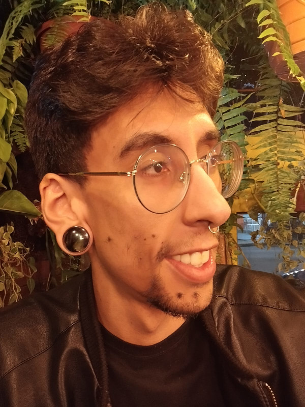

Eleve seu negócio digital a outro nível com um Front-end de qualidade!
Olá! Sou João Gabriel, mas podem me chamar de Ryuk, atualmente estou cursando Analise e Desenvolvimento de Sistema, gosto muito de tecnologia. Sou uma pessoa fácil de lidar, dedicado, persistente e possuo grande facilidade em aprender. E este e meu primeiro trabalho com o Front-end.
 Instagram
Instagram linkedin
linkedin Github
Github
